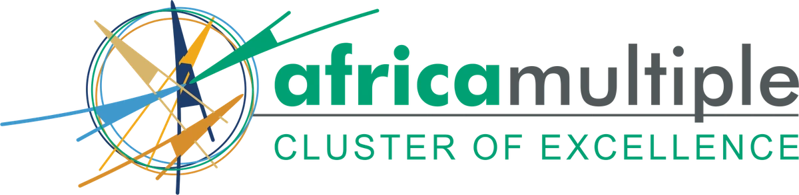

Omeka S theme · Africa Multiple Cluster of Excellence
A “Scholarly Modernism” design system on an OKLCH token foundation — first-class light and dark, with WCAG AA asserted by the build.

github.com/AM-Digital-Research-Environment/DRE-theme